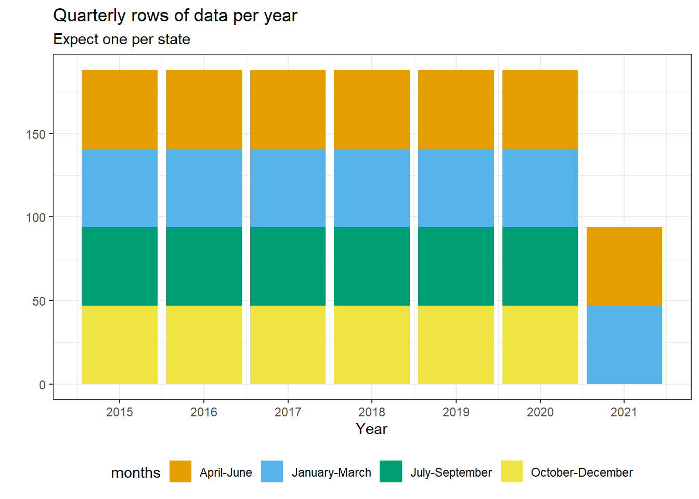
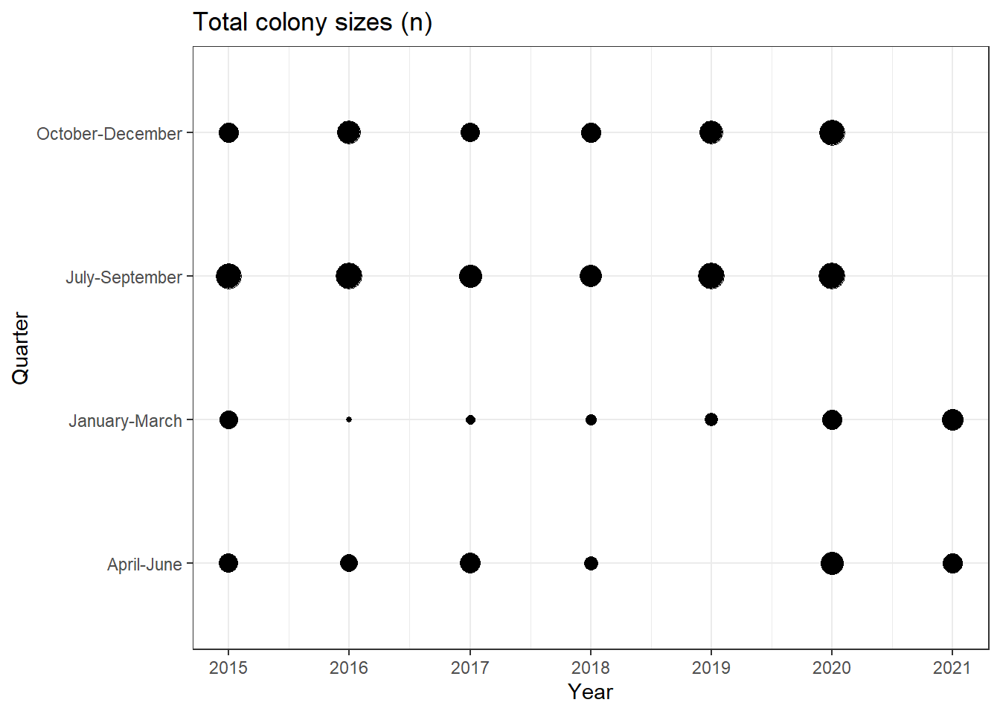
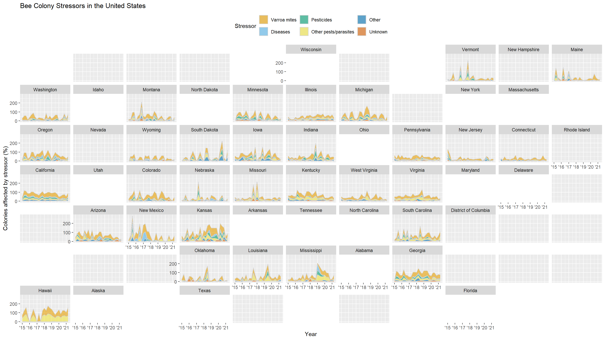

This is part of a short series of posts revisiting data visualization work on TidyTuesday data sets. The code and plot were initially created on January 11th, 2022. This bee colony collapse data originally comes from the USDA. See the TidyTuesday repo for more information.
1 Setup
1.1 Packages
1.2 Data
2 Explore the data
Peak at the data as provided…
glimpse(colony)Rows: 1,222
Columns: 10
$ year <dbl> 2015, 2015, 2015, 2015, 2015, 2015, 2015, 2015, 2015, …
$ months <chr> "January-March", "January-March", "January-March", "Ja…
$ state <chr> "Alabama", "Arizona", "Arkansas", "California", "Color…
$ colony_n <dbl> 7000, 35000, 13000, 1440000, 3500, 3900, 305000, 10400…
$ colony_max <dbl> 7000, 35000, 14000, 1690000, 12500, 3900, 315000, 1050…
$ colony_lost <dbl> 1800, 4600, 1500, 255000, 1500, 870, 42000, 14500, 380…
$ colony_lost_pct <dbl> 26, 13, 11, 15, 12, 22, 13, 14, 4, 4, 40, 22, 18, 23, …
$ colony_added <dbl> 2800, 3400, 1200, 250000, 200, 290, 54000, 47000, 3400…
$ colony_reno <dbl> 250, 2100, 90, 124000, 140, NA, 25000, 9500, 760, 8000…
$ colony_reno_pct <dbl> 4, 6, 1, 7, 1, NA, 8, 9, 7, 9, 4, 1, 2, 1, NA, 13, NA,……quick overview of the data types and completeness
skimr::skim(colony)| Name | colony |
| Number of rows | 1222 |
| Number of columns | 10 |
| _______________________ | |
| Column type frequency: | |
| character | 2 |
| numeric | 8 |
| ________________________ | |
| Group variables | None |
Variable type: character
| skim_variable | n_missing | complete_rate | min | max | empty | n_unique | whitespace |
|---|---|---|---|---|---|---|---|
| months | 0 | 1 | 10 | 16 | 0 | 4 | 0 |
| state | 0 | 1 | 4 | 14 | 0 | 47 | 0 |
Variable type: numeric
| skim_variable | n_missing | complete_rate | mean | sd | p0 | p25 | p50 | p75 | p100 | hist |
|---|---|---|---|---|---|---|---|---|---|---|
| year | 0 | 1.00 | 2017.77 | 1.89 | 2015 | 2016 | 2018 | 2019 | 2021 | ▇▃▃▃▆ |
| colony_n | 47 | 0.96 | 123578.04 | 437835.18 | 1300 | 8000 | 17500 | 55500 | 3181180 | ▇▁▁▁▁ |
| colony_max | 72 | 0.94 | 79112.77 | 190823.42 | 1700 | 9000 | 21000 | 68750 | 1710000 | ▇▁▁▁▁ |
| colony_lost | 47 | 0.96 | 16551.32 | 60544.42 | 20 | 950 | 2200 | 6500 | 502350 | ▇▁▁▁▁ |
| colony_lost_pct | 54 | 0.96 | 11.38 | 7.23 | 1 | 6 | 10 | 15 | 52 | ▇▅▁▁▁ |
| colony_added | 83 | 0.93 | 17243.20 | 68167.65 | 10 | 420 | 1800 | 6500 | 736920 | ▇▁▁▁▁ |
| colony_reno | 131 | 0.89 | 15278.86 | 62588.04 | 10 | 260 | 960 | 4585 | 806170 | ▇▁▁▁▁ |
| colony_reno_pct | 260 | 0.79 | 9.10 | 9.66 | 1 | 2 | 6 | 12 | 77 | ▇▁▁▁▁ |
colony |>
count(year, months) |>
ggplot(aes(x = year, y = n, fill = months)) +
geom_col() +
scale_fill_okabe_ito() +
scale_x_continuous(breaks = scales::breaks_width(1)) +
labs(
title = 'Quarterly rows of data per year',
subtitle = 'Expect one per state',
y = '',
x = 'Year'
) +
theme_bw() +
theme(legend.position = 'bottom', )
colony |>
summarise(n = sum(colony_n), .by = c(year, months)) |>
ggplot(aes(x = year, y = months, size = n / 1000000)) +
geom_point(show.legend = FALSE) +
scale_x_continuous(breaks = scales::breaks_width(1)) +
theme_bw() +
labs(title = 'Total colony sizes (n)', x = 'Year', y = 'Quarter')
No bees in 2019Q2. That seems unlikely.
colony |>
filter(year == 2019, months == 'April-June')# A tibble: 47 × 10
year months state colony_n colony_max colony_lost colony_lost_pct
<dbl> <chr> <chr> <dbl> <dbl> <dbl> <dbl>
1 2019 April-June Alabama NA NA NA NA
2 2019 April-June Arizona NA NA NA NA
3 2019 April-June Arkansas NA NA NA NA
4 2019 April-June California NA NA NA NA
5 2019 April-June Colorado NA NA NA NA
6 2019 April-June Connecticut NA NA NA NA
7 2019 April-June Florida NA NA NA NA
8 2019 April-June Georgia NA NA NA NA
9 2019 April-June Hawaii NA NA NA NA
10 2019 April-June Idaho NA NA NA NA
# ℹ 37 more rows
# ℹ 3 more variables: colony_added <dbl>, colony_reno <dbl>,
# colony_reno_pct <dbl>That’s no good, we’ll likely want to drop this quarter’s data from both data sets. First, let us take a quick look at the stressor data.
glimpse(stressor)Rows: 7,332
Columns: 5
$ year <dbl> 2015, 2015, 2015, 2015, 2015, 2015, 2015, 2015, 2015, 2015,…
$ months <chr> "January-March", "January-March", "January-March", "January…
$ state <chr> "Alabama", "Alabama", "Alabama", "Alabama", "Alabama", "Ala…
$ stressor <chr> "Varroa mites", "Other pests/parasites", "Disesases", "Pest…
$ stress_pct <dbl> 10.0, 5.4, NA, 2.2, 9.1, 9.4, 26.9, 20.5, 0.1, NA, 1.8, 3.1…And checking 2019Q2 in this data we find the same issue!
stressor |>
filter(year == 2019, months == 'April-June')# A tibble: 282 × 5
year months state stressor stress_pct
<dbl> <chr> <chr> <chr> <dbl>
1 2019 April-June Alabama Varroa mites NA
2 2019 April-June Alabama Other pests/parasites NA
3 2019 April-June Alabama Disesases NA
4 2019 April-June Alabama Pesticides NA
5 2019 April-June Alabama Other NA
6 2019 April-June Alabama Unknown NA
7 2019 April-June Arizona Varroa mites NA
8 2019 April-June Arizona Other pests/parasites NA
9 2019 April-June Arizona Disesases NA
10 2019 April-June Arizona Pesticides NA
# ℹ 272 more rows3 Data Prep
Create a date variable and filter out rows for 2019Q2
col_data <- colony |>
mutate(
quarter = case_when(
months == "January-March" ~ "Q1",
months == "April-June" ~ "Q2",
months == "July-September" ~ "Q3",
months == "October-December" ~ "Q4"
)
) |>
unite(yearquarter, c("year", "quarter")) |>
mutate(date = yq(yearquarter)) |>
filter(yearquarter != '2019_Q2')
stress_data <- stressor |>
mutate(
quarter = case_when(
months == "January-March" ~ "Q1",
months == "April-June" ~ "Q2",
months == "July-September" ~ "Q3",
months == "October-December" ~ "Q4"
)
) |>
unite(yearquarter, c("year", "quarter")) |>
mutate(date = yq(yearquarter)) |>
filter(yearquarter != '2019_Q2')Replace missing stress_pct data with 0, break out stressors into individual columns, and correct a mispelled variable name.
stress_data <- stress_data |>
replace_na(list(stress_pct = 0)) |>
pivot_wider(
names_from = stressor,
values_from = stress_pct,
values_fill = 0
) |>
unite(id, c('state', 'yearquarter')) |>
rename(Diseases = Disesases)Join data sets
full_data <- col_data |>
unite(id, c("state", "yearquarter"), remove = FALSE) |>
left_join(
stress_data |>
select(-months, -date)
) |>
pivot_longer(
c("Varroa mites":"Unknown"),
names_to = "stressor",
values_to = "stress_pct"
)
full_data$stressor <- factor(
full_data$stressor,
levels = c(
"Varroa mites",
"Diseases",
"Pesticides",
"Other pests/parasites",
"Other",
"Unknown"
)
)4 Plot
full_data |>
ggplot(aes(x = date, y = stress_pct)) +
geom_area(aes(fill = stressor), color = "lightgrey", alpha = 0.6) +
facet_geo(~state, grid = "us_state_grid1") +
scale_x_date(date_labels = "'%y", date_breaks = "1 year") +
scale_fill_okabe_ito() +
labs(
title = "Bee Colony Stressors in the United States",
x = "Year",
y = "Colonies affected by stressor (%)",
fill = "Stressor"
) +
theme(legend.position = 'top')
Citation
@online{kasowitz2025,
author = {Kasowitz, Seth},
title = {Quick {Plot:} {TidyTuesday} 2022 {Week} 2},
date = {2025-09-25},
url = {https://sethkasowitz.com/posts/2025-09-25_revisiting-tidytuesday-2022wk2/},
langid = {en}
}